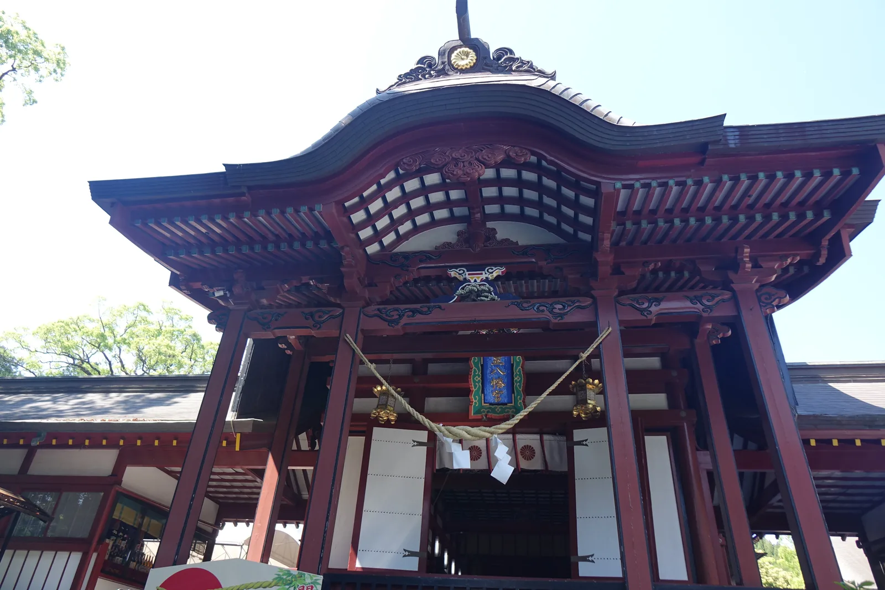
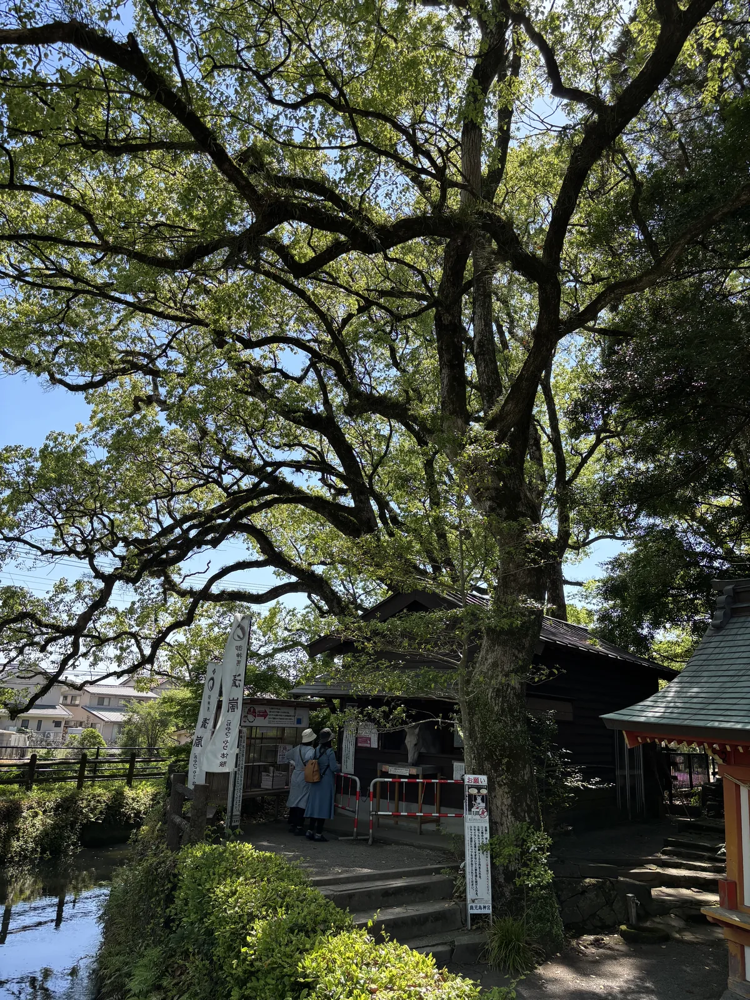
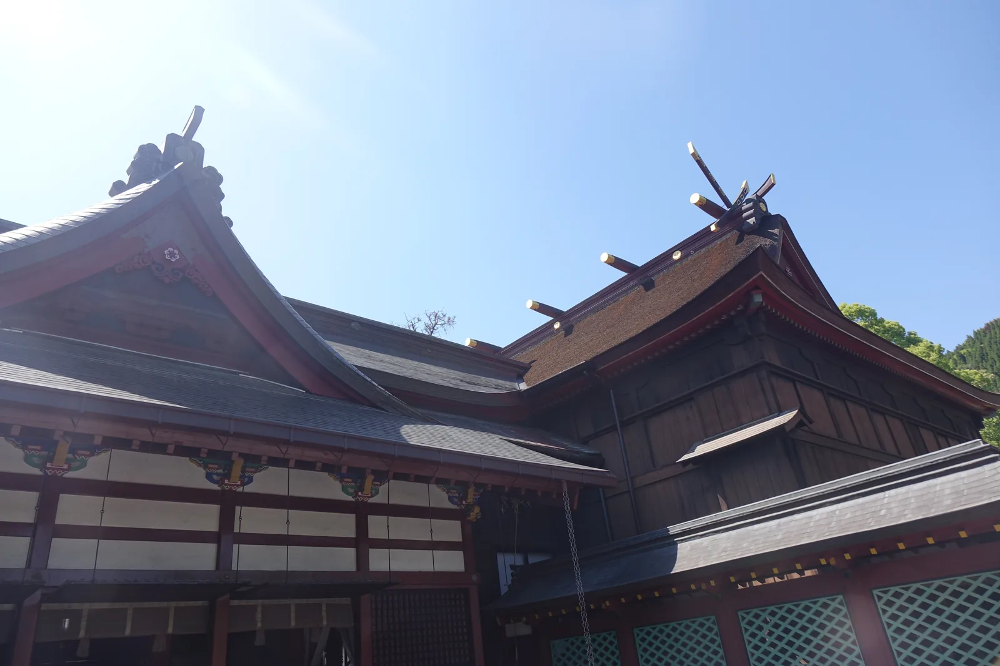
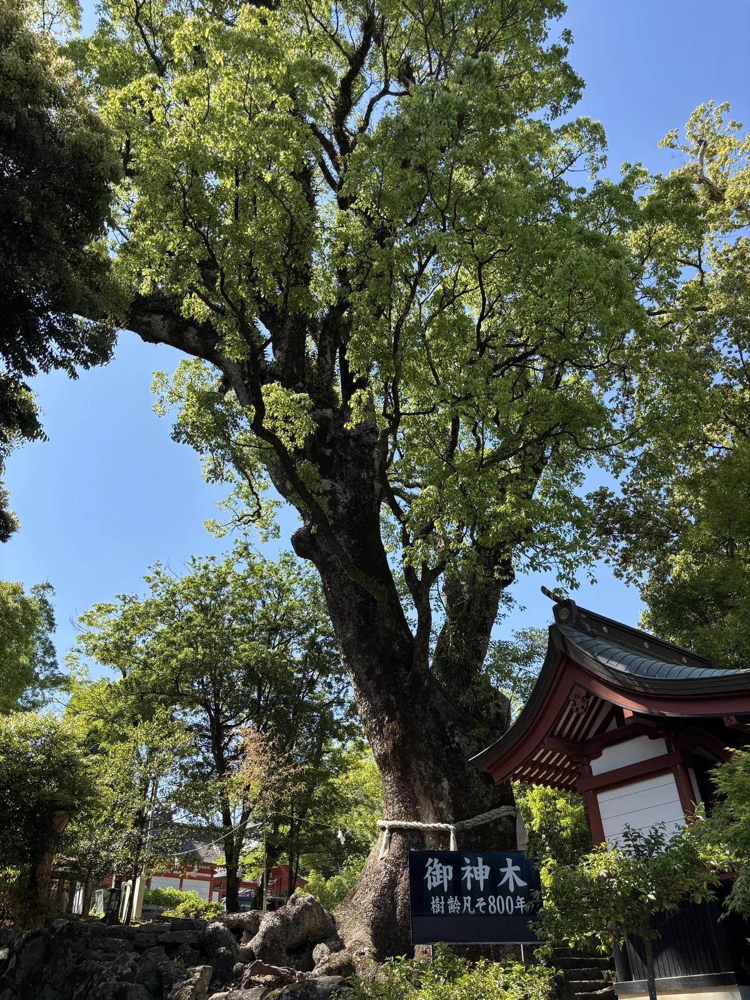
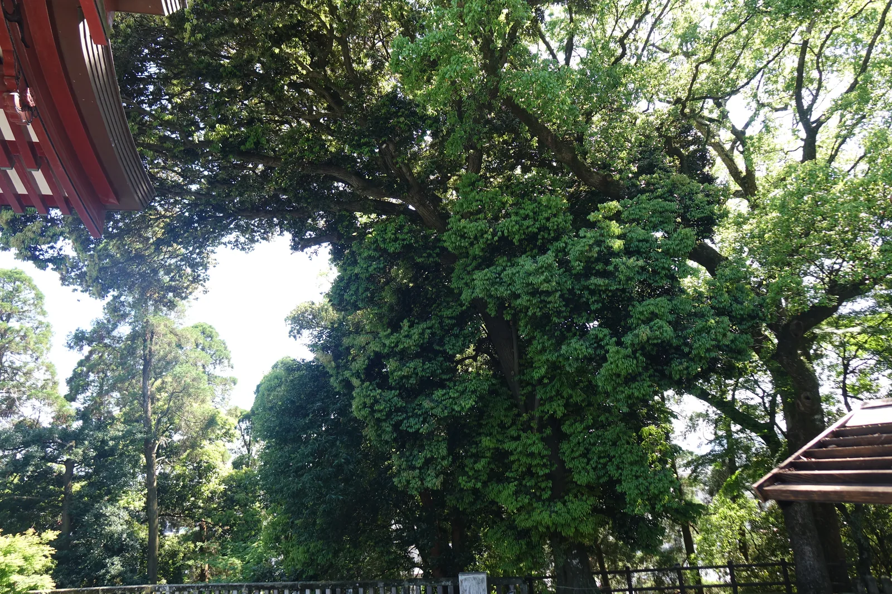
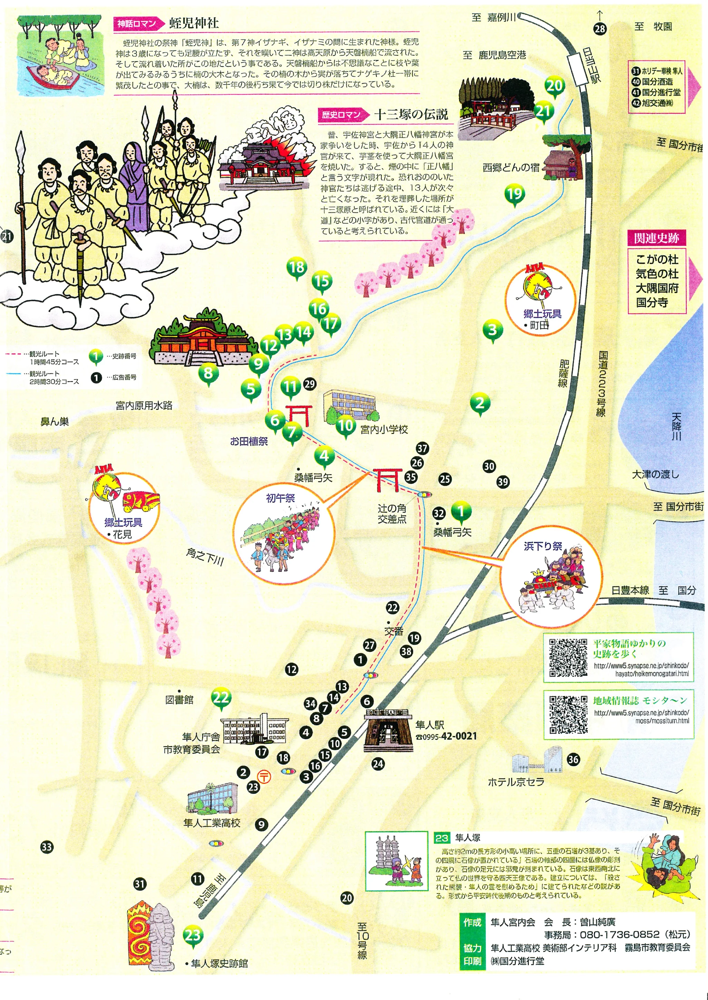

⛩ 神社寺廟散策 · 鹿兒島縣・霧島市隼人町內 · 2025-04
鹿兒島神宮
鹿児島神宮かごしまじんぐう
- 祭神
- 彥火火出見尊（山幸彥）・豐玉比賣命／相殿：帶中津日子命（仲哀天皇）・息長帶比賣命（神功皇后）・品陀和氣命（應神天皇）・仲姬命
- 社格
- 式內大社（延喜式・大社）・大隅國一宮・舊官幣大社・別表神社（舊稱大隅正八幡宮）
從高千穗一路南下，這是鹿兒島神話帶上的最後一站。故事的主角換了人。
在高千穗與上色見，撿箭的鬼八與踢穿岩壁的健磐龍命是主角；到了鹿兒島神宮， 主角變成山幸彥——同一則「天孫降臨」神話系譜下，另一個分支的結局。 他在這裡治理了五百多年，然後在這裡被拜了一千三百年， 拜他的人裡，甚至有一整支想爭奪這個名字的軍隊。
雨沒有下，但這一天走得比高千穗安靜。神宮的紅與黑鋪滿了整個廣場， 巨楠遮住了大半天光，勅使殿的重簷底下，鹿兒島縣最古老的一支血脈仍在被供奉。 社格、寶物、傳說糾纏在一起，比故事本身更複雜的，是這座神宮曾經捲入的一場正統之爭。
大隅正八幡宮本宮地位之認定
鹿兒島神宮的創祀年代，社傳只說遠在神代，或說在神武天皇之世。 御祭神彥火火出見尊，也就是山幸彥，據載曾在此地營建高千穗宮， 以此為皇居治理五百餘年，開拓農耕、畜產、漁獵之道，奠定了國家的基礎。
它的另一個名字更能說明它的份量——大隅正八幡宮，也稱國分正八幡、正八幡宮， 據載是全國正八幡的本宮。平安時代醍醐天皇敕修的《延喜式神名帳》裡， 它以「大隅國桑原郡 鹿兒嶋神社」之名列入大社， 是日向、大隅、薩摩三國之中唯一的式內大社，社格凌駕於周邊所有神社之上。
建久年間（1190〜1199），社領一度達兩千五百餘町步，直到江戶末期仍保有千石。 明治四年列為國幣中社，七年獲神宮號宣下並列官幣中社， 二十八年再升格為官幣大社，歷代天皇與勅使參拜逾二十次， 昭和十年與四十九年，昭和天皇兩度親自行幸。
現存社殿是桃園天皇寶曆六年（1756），由島津重年（第24代藩主）發願造營、 其子島津重豪竣工的建物。二〇二一年，日本文化審議會答申將本殿及拜殿、 勅使殿、攝社四所神社本殿指定為國家重要文化財，翌年二月正式公告， 這場審議距離造營已過去兩百六十餘年。

立地非屬偶然
決定這座神宮位置的，是一場搬遷。社傳記載，和銅元年（708）， 神宮從原本的社地遷到現址，舊社地就成了攝社石體神社， 供奉的正是山幸彥與海神之女豐玉姬結為連理、居住過的地方。
這段搬遷把神話的地理範圍鋪得很開。神宮西北約十三公里處， 是傳為彥火火出見尊御陵的高屋山上陵；神宮本身則落在天降川沖積出的平野邊緣， 隼人町這個地名，來自曾經在此與大和朝廷對抗、最終被平定的隼人族。 一座神宮、一座御陵、一個地名，是同一段神話與歷史留下的三個座標點。
參道從石段起步，兩側是保存完整的社叢，巨楠遮蔽天光， 往上走一小段就到勅使殿前的廣場——不像上色見或高千穗那樣層層深入山林， 鹿兒島神宮的縱深感來自樹木本身的高度，而不是地形的爬升。
參道形制及其空間效果
大鳥居橫跨在公道之上，是進入這片社域前最先看到的地標。 穿過鳥居、爬完石段，正面是勅使殿——社殿群的入口建築， 北側依序接著拜殿與本殿，三者並列，各自都有豐富的裝飾。

勅使殿的持送（支撐屋簷的雕刻構件）刻著龍，拜殿有天井畫， 本殿規模在南九州同類建築中極為罕見，全體以雕刻與壁畫裝飾， 壁畫出自薩摩藩御用畫師、狩野派木村探元之手， 以老梅、櫻花、鴿子、薩摩雞、紅葉入畫，極彩色加上漆塗完工。

本殿向拜的柱子上盤著一條龍柱，這是整組建築裡最容易辨認的細節—— 它的爪有四趾，而南九州其他神社的龍柱一律是三趾。這一趾之差， 在建築裝飾的規格裡，通常對應著更高的位階。
攝社四所神社與本殿群一同被列為重要文化財，供奉大雀命、石姬命、 荒田郎女、根鳥命四柱。境內另立有正宮造替の石燈籠，是寶曆六年造宮時奉納、 縣指定有形文化財的「琴柱燈籠」，腳部刻著社殿建立的銘文。
社殿右前方的御神木，相傳植於建久年間，樹齡約八百年， 巨大的樹冠幾乎遮住這一側的天空——它比現存的任何一棟建築都更早見證這片社域。


大隅八幡與宇佐八幡的正統之爭
平安時代，宇佐八幡向九州各地勸請分靈，鹿兒島神宮據載也在這波浪潮中合祀了八幡神， 此後才多了正八幡宮、大隅正八幡宮、國分八幡宮這些別名。 成書於平安後期的《今昔物語集》記載，八幡神最初顯現於大隅國， 之後才遷往宇佐，最終落腳石清水——把大隅列在了宇佐之前。
「大隅正八幡」的「正」字，就是這段爭議的痕跡。相傳兩地曾為了誰才是正統八幡起過爭執， 宇佐八幡一方暗中派出十餘名使者，燒毀了大隅這一側的社殿。烈焰竄起時， 黑煙裡浮現出「正八幡」三字，使者們見狀驚駭逃走，途中卻接連倒下， 最後死者共計十三人。當地人憐憫這些客死異鄉的人，各自在倒下之處堆起塚， 這片土地因此得名十三塚原——如今是鹿兒島空港北方的一處史跡公園。
這則傳說沒有勝負分明的結局，兩地至今各自尊奉自己是「正八幡」。 但它留下了一個具體的座標：十三塚原這個地名， 把一場關於神格正統性的古老爭執，釘在了地圖上可以走到的地方。
隼人町這個地名背後的歷史，同樣是一段征服的敘事。隼人族曾激烈抵抗大和朝廷 對這片土地的統治，戰敗後的怨念之深，讓朝廷一方也心生畏懼。 神宮南側約一點五公里的隼人塚，三座石塔與四天王石像立於其上， 就是為了慰靈這支族群而建——其祭祀傳統據載已延續約一千三百年， 比為菅原道真建北野天滿宮的慰靈史還要早上數百年。
祭儀與授与品
例祭・主要祭事
- 例祭——舊曆8月15日
- 初午祭——舊曆1月18日之後的第一個星期日舉行， 繫著鈴鐺、裝飾華麗的「鈴掛馬」由踊り連牽引，配著太鼓與三味線邊走邊舞， 每年吸引約十萬人參與，是鹿兒島縣具代表性的祭典之一
- 七種祭（1月7日）・藤祭（舊曆3月10日）・御田植祭（舊曆5月5日）
- 御浜下り祭（10月第三個星期日）
御神馬與授与品
- 神宮養有御神馬「清嵐」，官方社群帳號會發布相關消息與季節限定御朱印
- 具體授与品品項與初穗料未在官方頁面確認，以現地授与所公告為準
這一帶的吃食
霧島市境內物產以唐芋（薩摩芋）、霧島茶、黑醋與黑豬肉聞名， 隼人町一帶的食堂多能吃到以這些在地食材做的鄉土定食。
晨間路線之擬定及其限制
鹿兒島神宮所在的隼人宮內，霧島市役所發行過一張手繪插畫散步地圖 ——《平家物語ゆかりの史跡を歩く》，由隼人宮內會編製、霧島市教育委員會協力， 把神宮與周邊二十餘處史跡都畫進同一張圖，還分了一小時四十五分與兩小時三十分兩種路線。 霧島市シルバー人材センター的觀光志工團「しっちょいどん」另外公開了幾種文字版導覽路線， 節點與距離時間同樣是實測數據，兩者可以互相對照。
其中一條約四公里、徒步兩小時的環路最合適：從神宮出發， 先看田の神——立於神宮下御神田旁，天明元年（1781）造立的石像， 農作姿的翁面石像，是御田植祭時舉行田の神舞的地方； 接著是鼻んす，宮內原用水的雙孔隧道，正德元年（1711）起工、 六年後完工，因形似人的鼻孔而得名，是這一帶年代最久的水利遺構之一。
路線繼續往南，經過空順石室與隼人塚——三座石塔配四天王石像， 慰靈隼人族的史跡，附設史跡館可以稍作休息； 再往回走，最後一站是保食神社，原本是彌勒院旁的辯財天堂， 明治初年廢佛毀釋後移建到現址，社殿只有四尺見方，正面設有唐破風。 繞回神宮，可以再走一趟攝社石體神社，境內堆疊的丸石相傳帶回家能保佑安產。
建議走法（早上出發，約2小時）
- 鹿兒島神宮參拜——大鳥居、石段、勅使殿、拜殿、本殿
- 田の神像
- 鼻んす（宮內原用水隧道）
- 空順石室 → 隼人塚（史跡館）
- 保食神社
- 回程參拜攝社石體神社
路況：多為住宅區內道路與神社境內石段，沒有明顯高低差風險。
交通：JR日豐本線・肥薩線隼人驛徒步約20分；神宮設有免費停車場，可停約200台。
接下來往哪走：往東北方向約十餘公里是同一座城市裡的另一座神宮——
霧島神宮，天孫降臨神話系譜裡更早的一代神明供奉在那裡。
地圖
隼人宮內會與霧島市教育委員會協力發行的《平家物語ゆかりの史跡を歩く》， 把鹿兒島神宮、田の神、鼻んす、空順石室、隼人塚、保食神社、石體神社， 連同十三塚傳說與浜下り祭的插圖都畫進同一張圖，比例尺涵蓋整個隼人宮內地區。

分享用短連結：https://os.housearch.net/s/6